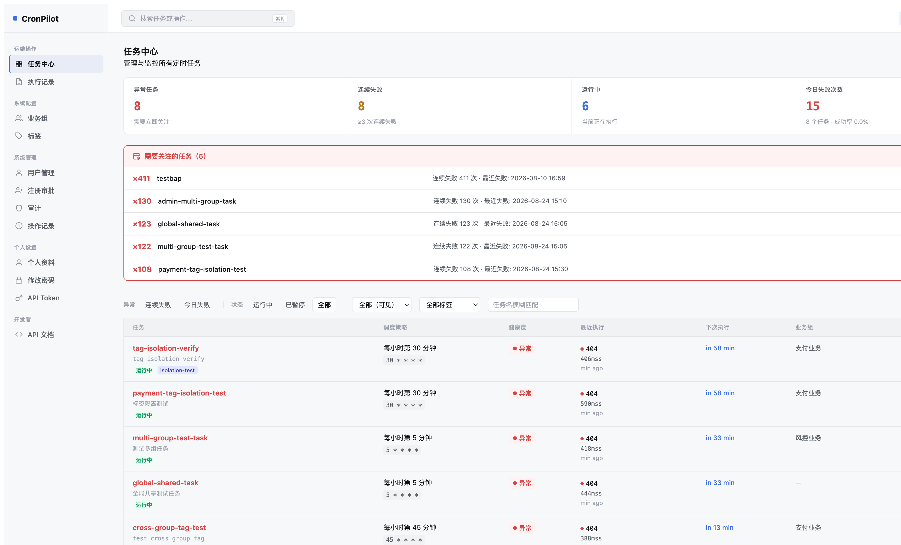
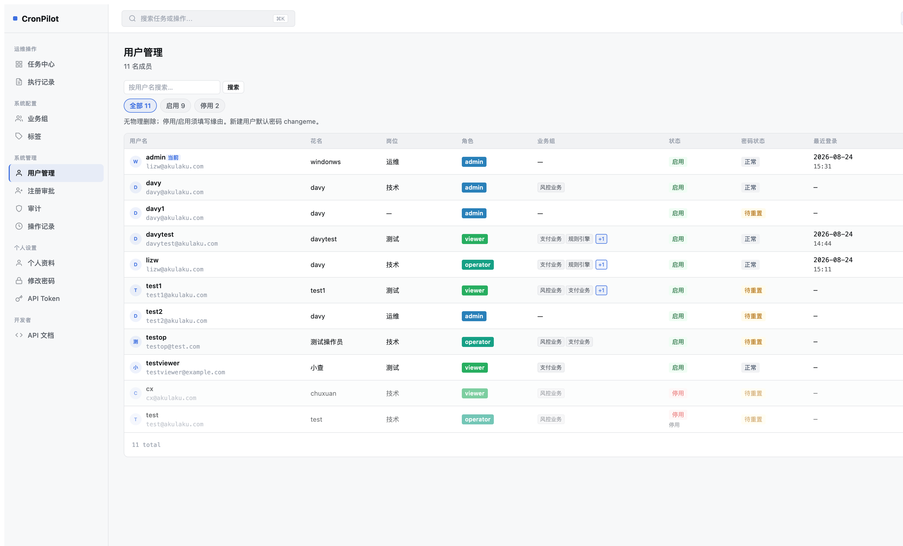
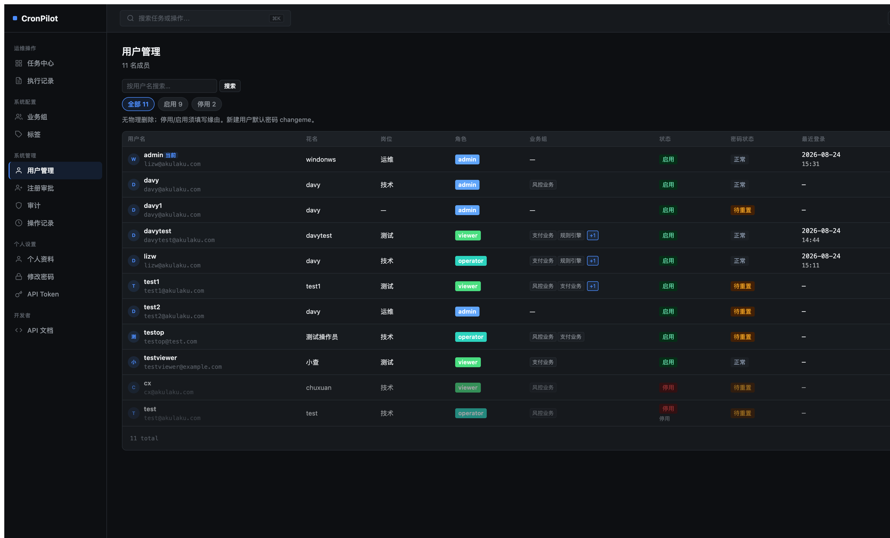
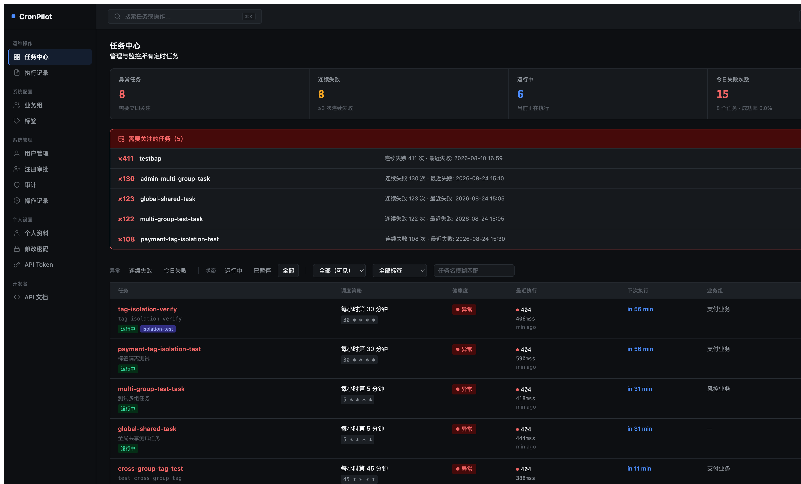

分类：代码质量修复
日期：2026-08-24
关联：OPT-P1-16（Redesign Phase 1）· Review 发现
状态：已实施
Code Review 发现 Redesign CSS 文件中存在 3 类代码质量问题：
#fff、#ddd、#d97706 等），违反项目颜色变量统一规范.cp-breadcrumb 选择器在 redesign-layout.css 和 redesign-pages.css 中各有一份定义，属性值冲突@media print 中引用了不存在的 .redesign-* 类名，实际 DOM 使用 .cp-* 前缀#fff，虽然 console-theme.css 已有 --cp-on-filled: #ffffff 可用。部分引用了不存在的变量名（--cp-warning 应为 --cp-warn-accent），反映对变量命名体系不熟悉。.redesign-*，后来类名统一改为 .cp-* 时未同步 print 块。| 文件 | 行号 | 当前值 | 改为 |
|---|---|---|---|
redesign-components.css | 55, 61 | color: #fff | color: var(--cp-on-filled) |
redesign-components.css | 423 | color: #fff | color: var(--cp-on-filled) |
redesign-components.css | 461, 467 | color: #fff | color: var(--cp-on-filled) |
redesign-components.css | 797, 803 | color: #fff | color: var(--cp-on-filled) |
redesign-pages.css | 96 | color: #fff | color: var(--cp-on-filled) |
redesign-pages.css | 614 | var(--cp-warning-bg, rgba(...)) | var(--cp-warn-bg) |
redesign-pages.css | 615 | var(--cp-warning, #d97706) | var(--cp-warn-accent) |
redesign-pages.css | 771 | 1px solid #ddd | 1px solid var(--cp-border) |
redesign-pages.css | 897 | var(--cp-warning, #d97706) | var(--cp-warn-accent) |
redesign-pages.css | 1103 | var(--cp-white, #fff) | var(--cp-on-filled) |
redesign-mockup-shared.css | 162 | 带 fallback 的 var(--cp-success-bg, #dcfce7) | var(--cp-success-bg)（移除 fallback） |
redesign-mockup-shared.css | 167 | var(--cp-warn-text, #854d0e) | var(--cp-warn-text)（新增变量） |
redesign-mockup-shared.css | 172 | var(--cp-danger-text, #991b1b) | var(--cp-danger-text)（新增变量） |
| 变量名 | Light | Dark | 语义 |
|---|---|---|---|
--cp-warn-text | #854d0e（amber-800） | #fde68a | 警告文字色（浅底上） |
--cp-danger-text | #991b1b（red-800） | #fca5a5 | 危险文字色（浅底上） |
redesign-layout.css L423-445 的 .cp-breadcrumb 块（含 .sep::after）redesign-pages.css L458-505 的版本（更完整，含 svg、.current、.kbd-hint）.sep::after 规则迁移到 redesign-pages.css 的 breadcrumb 区块| 位置 | 当前 | 改为 |
|---|---|---|
| L742 | .redesign-sidebar | .cp-sidebar |
| L743 | .redesign-topbar | .cp-topbar |
| L751 | .redesign-main | .cp-main |
app/static/css/console-theme.css — 新增 2 个变量（light + dark）app/static/css/redesign-components.css — 7 处 #fff → var(--cp-on-filled)app/static/css/redesign-pages.css — 5 处颜色替换 + breadcrumb .sep::after 迁入 + print 选择器修正app/static/css/redesign-mockup-shared.css — 3 处 fallback 移除app/static/css/redesign-layout.css — 删除重复 breadcrumb 块.cp-* vs .btn-c）整合 — 需独立方案console-mode.css 中的硬编码 — 不在 redesign 范围本方案涉及纯 CSS 变更，无功能逻辑，可一次性执行。无需分批。
# redesign CSS 无硬编码颜色
grep -n '#[0-9a-fA-F]\{3,8\}[; )]' app/static/css/redesign-*.css | grep -v '/\*' && echo "FAIL" || echo "OK"
# 无 .redesign-* 残留选择器
grep -n '\.redesign-' app/static/css/redesign-pages.css && echo "FAIL" || echo "OK"
# breadcrumb 仅在 pages 中定义
grep -c '\.cp-breadcrumb' app/static/css/redesign-layout.css # 期望 0cronpilot.sh restart --daemon → 浏览器验证 dashboard + users 页面在浅色/暗色模式下视觉无变化#fff 与 var(--cp-on-filled) 在 :root 中均为 #ffffff）本次修复为纯代码质量改进。#fff 和 var(--cp-on-filled) 在 :root 中均为 #ffffff，修复前后视觉效果完全一致。以下截图证实无视觉回归。
| 修复前 | 修复后 |
|---|---|
 |
| 修复前 | 修复后 |
|---|---|
 |
| 修复前 | 修复后 |
|---|---|
 |
| 修复前 | 修复后 |
|---|---|
 |
[data-theme="dark"] 中的 --cp-on-filled 即可全局生效 — 这正是使用变量的好处.redesign-sidebar 无法匹配 DOM 中的 .cp-sidebar，导致打印时侧边栏/顶栏仍然可见（print 样式是死代码）；修复后选择器正确匹配，打印时侧边栏和顶栏将被隐藏。这是恢复原始设计意图，不是引入新行为。